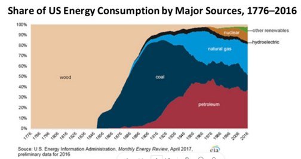
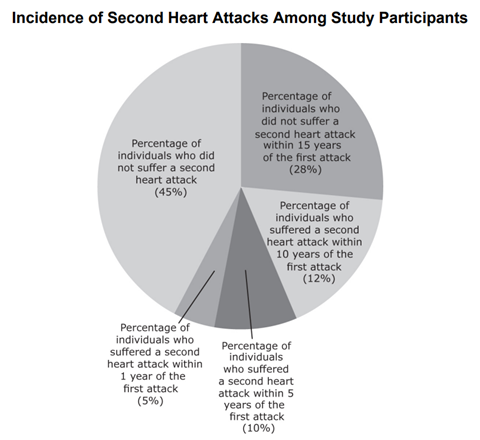
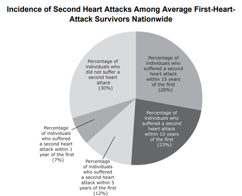
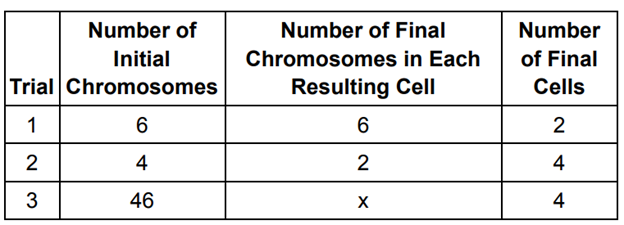
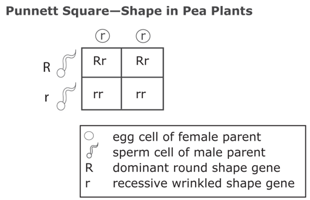

What Is the Difference between Weathering and Erosion?
Weathering is the process of decomposing, breaking up, or changing the color of rocks. Weathering may be caused by the action of water, air, chemicals, plants, or animals. Chemical weathering involves chemical changes in the minerals of the rock, or on the surface of the rock, that make the rock change its shape or color. Carbon dioxide, oxygen, water, and acids may all cause chemical weathering. Mechanical weathering is the process of breaking a large rock into smaller pieces without changing the minerals in the rock. Mechanical weathering may be caused by frost, ice, plant roots, running water, or heat from the sun.
Once the small pieces of rocks are changed or broken apart by weathering, they may start to be moved by wind, water, or ice. When the smaller rock pieces (now pebbles, sand or soil) are moved by these natural forces, it is called erosion. So, if a rock is changed or broken but stays where it is, it is called weathering. If the pieces of weathered rock are moved away, it is called erosion.
Mitosis and meiosis are both forms of division of the nucleus in eukaryotic cells. They share some similarities, but also exhibit distinct differences that lead to very different outcomes.
Mitosis is a single nuclear division of a non-germ cell that results in two nuclei partitioned into two new cells. The nuclei resulting from a mitotic division are genetically identical to the original nucleus, with the same number of sets of chromosomes. In most plants and all animal species, it is typically diploid cells that undergo mitosis to form new diploid cells. Diploid cells contain two sets of chromosomes, or two of each type of chromosome.
In contrast, meiosis consists of two nuclear divisions of germ cells resulting in four nuclei that are partitioned into four new haploid cells. The nuclei resulting from meiosis are not genetically identical and they contain only one chromosome set instead of two. This is half the number of chromosome sets in the original diploid parent cell.
A renewable energy source is either formed or replaced naturally within a short period of time.
A simple machine is a mechanical device that changes the direction or magnitude of a force. The six types of simple machines are the (1) lever, (2) wheel and axle, (3) pulley, (4) inclined plane, (5) wedge, and (6) screw. Simple machines can be regarded as the elementary "building blocks" of which all more complicated machines (sometimes called "compound machines") are composed. For example, a bicycle is a compound machine that is uses wheels, levers, and pulleys.
A chemistry class is balancing chemical equations. Three students balance the equation:
____P4 + ____O2 ==> ____P2O5 .
They all obtain different results.
Davidson says the correct balanced equation is
P4 + 5O2 ==> 2P2O5.
Effie says the correct balanced equation is
3P4 + 15O2 ==> 6P2O5.
Georgia says the correct balanced equation is
2P4 + 11O2 ==> 4P2O5.
Scientists conducted a study to determine whether drinking a small amount of alcohol each day reduces one’s chances of suffering from a heart attack. They tested 400 first-heart-attack survivors who maintained daily fitness routines and healthy diets by giving these individuals one alcoholic drink per day for 20 years. The results of the study are shown in the chart below, along with the incidence of second heart attacks among firstheart-attack survivors nationwide.
 When a cell undergoes mitosis, it duplicates into two genetically exact replicas of itself, so that the new cells have exactly the same number of chromosomes as did the original cell. When a cell undergoes meiosis, it creates four cells, each with half the number of original chromosomes. Meiosis, unlike mitosis, takes place in two rounds. Scientists conduct an experiment on three different cells, and track the number of resulting cells and chromosomes after each cell undergoes either meiosis or mitosis, according to the cell type. The results are shown below.
Chromosomes come in pairs and contain genes, which code for inherited traits. If a gene is always expressed when present, it is called dominant and is represented by a capital letter. A dominant gene will be expressed whether an individual is pure and has two copies of the dominant gene or is hybrid and contains one dominant copy and one copy of another gene. In the case of hybrids, the dominant gene hides the expression of the recessive gene. A recessive gene is expressed only when it is pure, and it is represented by a lowercase letter. In pea plants, the gene for round pea shape is dominant and the gene for wrinkled pea shape is recessive. A plant that produces wrinkled peas must be pure for the wrinkled gene, meaning it must contain two copies of the wrinkled gene. A plant that produces round peas can either be pure for the round gene or be hybrid and have one gene for round shape and one gene for wrinkled shape. Punnett Squares are charts used to predict the odds of specific gene combinations in offspring. Below is a Punnett Square of a cross between a pea plant purebred for wrinkled peas and a pea plant that produces round peas.
Nearly 75% of plant and animal species on Earth, including all non-bird dinosaurs, went extinct during the Cretaceous-Paleogene (or Cretaceous-Tertiary) extinction event. Scientists have spent years speculating about what precipitated this extinction. Various hypotheses have been presented to account for the disappearance of these huge creatures. The prevailing theory is that a large asteroid collided with Earth and its impact raised a cloud of dust that reduced the amount of sunlight that reached the planet’s surface for many years. Temperatures fell rapidly, and without the normal amount of sunlight, much of the plant life on the planet’s surface disappeared. Unadapted for sudden lower temperatures and a much smaller food supply, the dinosaurs, as well as many other species, became extinct. In support of this theory, scientists have found a thin layer of sediment in marine and terrestrial rocks that contains metals that are rare on Earth but abundant in asteroids. Additionally, a large crater was found in the Gulf of Mexico that must have been formed when an asteroid hit Earth at roughly the same time as the extinctions took place. Amid the destruction was opportunity for evolution. There were countless vacated ecological niches and the surviving organisms rapidly adapted and developed in order to occupy these niches. It is believed that several of the mammals, including the ancestors of primates, that are alive today developed during this time.
1. What is the most likely cause of the deterioration of the statue?
2. A scientist claims that she found evidence of mitosis and meiosis in human cells she has been observing. Is she correct? Why or why not?
3. What can be said about US energy consumption over the last 200 years?
4. Which of the following is NOT an example of a simple machine?
5. Who is correct?
6. Based on the results of the study, scientists concluded that drinking alcohol in small amounts lowers the risk of heart attack. Which of the following represents a flaw in the study above?
7. Choose the correct statement.
8. Which of the following describes the offspring of this cross?
9. Based on the information in the chart on the left, which of the following animals are vertebrates?
10. If the preceding information is true, which of the following is the most likely explanation for the fact that there is still life on Earth today?